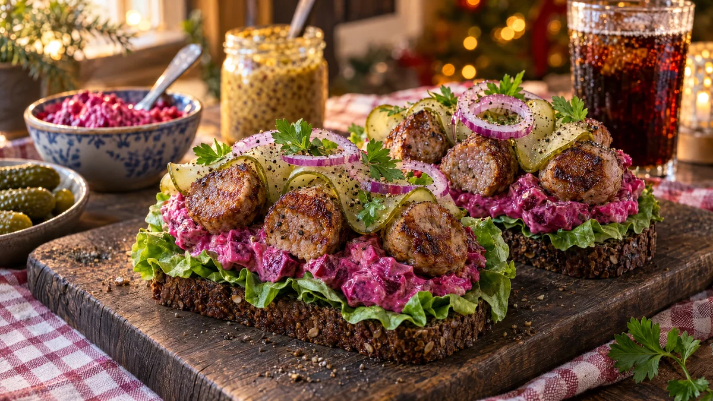

RESTFEST · RECEPTSmörgås
Köttbullsmörgås med rödbetssallad och knaprig gurka
Överblivna köttbullar halveras och läggs på rågbröd med krämig, rosaröd rödbetssallad. Ovanpå kommer tunna band av saltgurka, rödlöksringar och persilja. Julbordsklassikern som en snygg delismörgås.
- Förberedelse
- 15 min
- Tillagning
- 5 min
- Portioner
- 4 smörgåsar
- Nivå
- Nybörjare
 Det här behöver du
Det här behöver du
JÄMFÖRT MED DIN KYL
Tryck på + vid det du behöver köpa.
Snabb rödbetssallad
Smörgåsar
Gör så här
- Hacka rödbetorna i små tärningar, ca ½ cm. Rör ihop dem med crème fraiche, majonnäs och senap. Smaka av med salt och peppar och ställ kallt.
- Dela köttbullarna på mitten. Vill du ha krispiga kanter, stek snittytorna i en torr stekpanna i 2 minuter och låt dem svalna.
- Skiva saltgurkorna i tunna band på längden med en osthyvel eller en vass kniv. Skiva rödlöken i tunna ringar.
- Bred smör på brödskivorna och lägg ett salladsblad på varje.
- Bred eller klicka rödbetssallad över salladsbladet.
- Lägg 8 köttbullshalvor tätt på varje smörgås, med snittytan uppåt.
- Vik gurkbanden i vågor mellan köttbullarna och toppa med rödlök och persilja.
Dekoration och servering
- Låt lite av den rosa rödbetssalladen synas mellan köttbullarna, det ger en vacker kontrast mot den mörka ytan.
- Avsluta med nymald svartpeppar och några persiljeblad ovanpå.
- Servera på ett träbräde med en extra skål rödbetssallad och några hela saltgurkor bredvid.
- Rödbetssalladen håller i 3 dagar i kylen.
Mått och ugnstemperaturer
Måtten är svenska (dl, msk, tsk, krm). Ugnstemperaturerna gäller vanlig ugn med över- och undervärme; med varmluft, sänk med 20 grader.